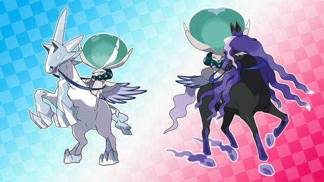

-
The Crown Tundra is het tweede gebied dat je met je uitbreidingspas kunt bezoeken. Ontdek zelf dit uitgestrekte landschap met zijn glinsterende sneeuwjachten! In dit ijskoude gebied met zijn grillige, met sneeuw bedekte bergen leven de mensen in een kleine, hechte gemeenschap.
Aan het begin van je avonturen zal een man genaamd Peony jou hier benoemen tot de leider van het verkenningsteam in The Crown Tundra. Je krijgt de opdracht de uithoeken van dit bevroren land te verkennen, waaronder het binnenste van een Pokémon Den. Hiervan heb je tot nu toe alleen tijdens Max Raid Battles een glimp op kunnen vangen!
Bovendien blijken vele Legendary Pokémon zich in The Crown Tundra te vestigen.


News
-

Nieuwe
Nieuwe Legendary Pokémon ontdekt!
-
Nieuwe
Nu beschikbaar
-

Nieuwe
Pokémon met een onderlinge band
-
Nieuwe
Onlangs ontdekte Legendary Pokémon